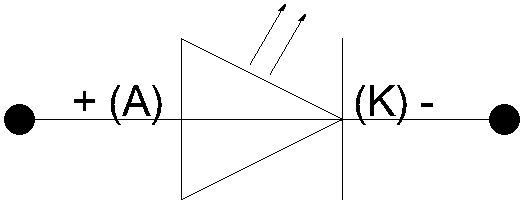

Previous
Next
TOC
Grundlagen zu den Leuchtdioden
Der Vorwiderstand einer Leuchtdiode wird wie folgt berechnet:
Ueingang - Udiode
R= -----------------
15mA
5 - 2 Volt
R= ------------
15mA
R= 200 Ohm
Ueingang ist die Eingangsspanung bzw. die Versorgungsspannung
Udiode ist die maximale Spannung die die Diode bekommen darf, je
nach Leuchtfarbe der LED liegt diese zwischen 1.8 Volt und 2.2
Volt)
15mA ist der ungefähre Strom den die LED benötigt um ihre maximale
Leuchtkraft zu entfalten (je nach LED kann dieser Strom extrem ab-
weichen von den hier verwendeten 15mA)
R ist dann der Widerstandwert in Ohm (hier 200 Ohm)
Wird die LED an einer Wechselspannung betrieben (zum beispiel auf der
Modelleisenbahn) muß eine andere Diode Antiparallel (also entgegen-
gesetzt anschließen) zu der LED geschaltet werden um die Sperrspan-
nung auf 0,6 Volt zu begrenzen.
Was ist überhaupt eine LED?
LED ist eine Abkürzung aus dem Amerikanischen: Light Emitting Diode.
Bei einer Leuchtdiode (LED) wird ein Leuchteffekt im Kristall ausge-
nutzt, der dadurch entsteht, daß Photonen frei werden. Diese wiederum
benötigen zum freiwerden eine elektrische Energie in Form der Versor-
gungsspannung. LEDs benötigen immer(!) einen Vorwiderstand.
Das Schaltbild einer LED

Die Anode ist normalerweise das längere Anschlußbeinchen der LED,
demzufolge ist die Katode das kürzere Anschlußbeinchen.
Kapitel Grundlagen zu den Leuchtdioden, Seite 1